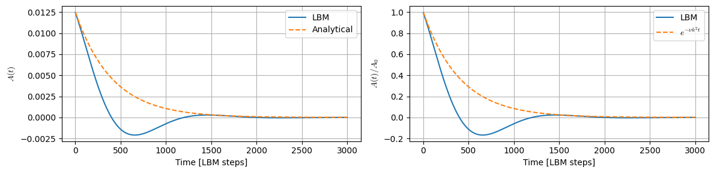
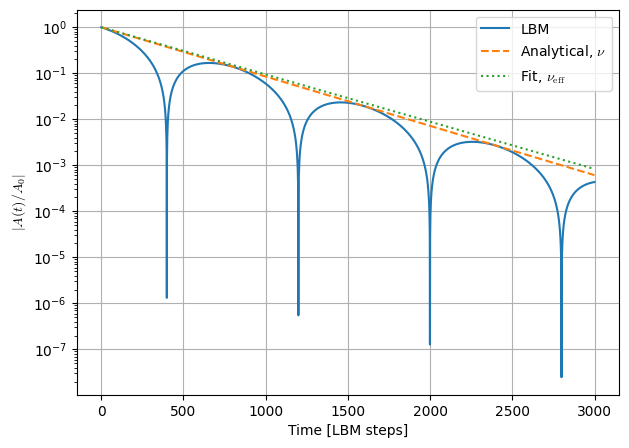
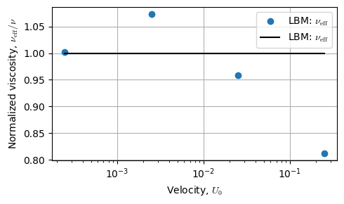
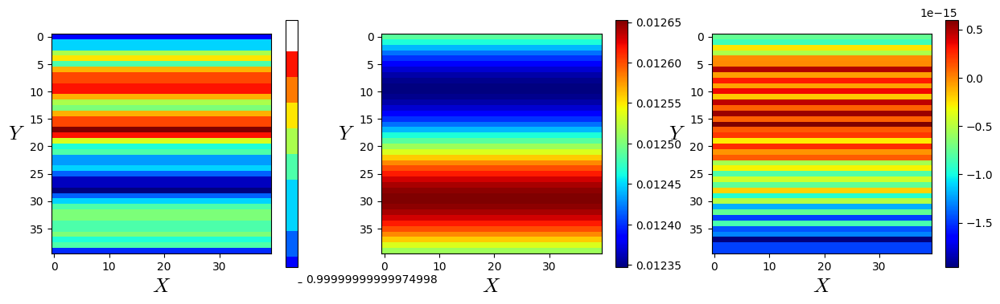
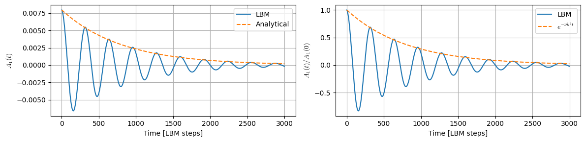
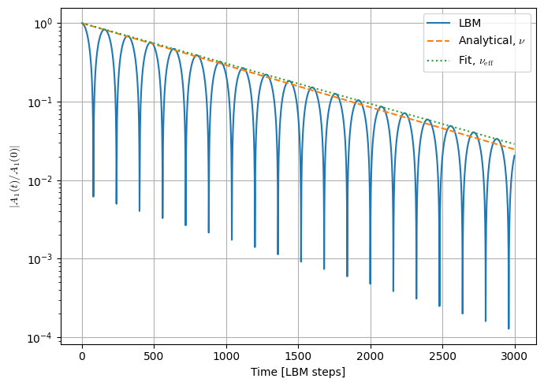
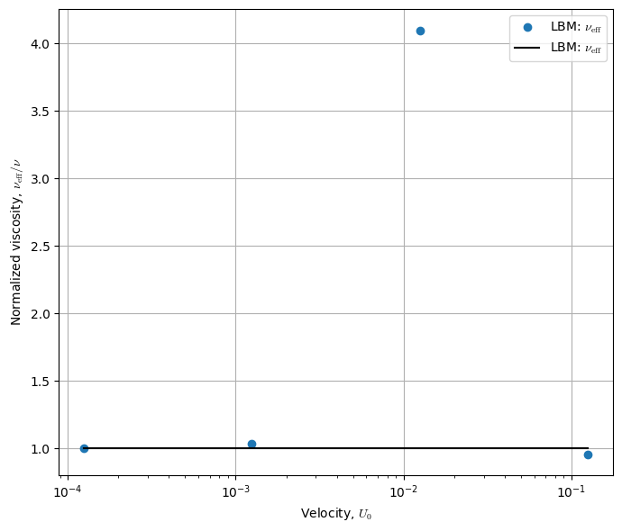

2D Continuous Shear-Wave Decay
In the Lattice Boltzmann Method (LBM), Galilean invariance means that the macroscopic equations recovered by the method should not depend on the constant velocity of the observer/reference frame.
For example, suppose you have a flow field
Now imagine observing exactly the same physical system from a frame moving with a constant velocity (\mathbf{U}_0). The transformed velocity is
A Galilean-invariant numerical method should predict the same physical behavior in both frames.
For the Navier–Stokes equations, the transformation is
and the equations retain the same form. Ideally, the LBM should recover this property as well.
The issue is that standard LBM is only approximately Galilean invariant. Consider the discrete Boltzmann equation
For BGK,
with the common second-order equilibrium
This equilibrium is obtained from a low-Mach-number expansion of the Maxwell-Boltzmann distribution. It is truncated at second order in velocity. That truncation is one of the main reasons standard LBM does not possess exact Galilean invariance.
Where the error appears
The Navier–Stokes momentum equation should be
A Chapman–Enskog expansion of a standard lattice such as D2Q9 or D3Q19 produces this equation plus higher-order errors. Some of these errors depend explicitly on the absolute velocity (\mathbf{u}), typically through terms of order
where
Schematically, you can get corrections such as
or related cubic-velocity contributions.
These are often called cubic velocity errors or Galilean invariance errors.
A particularly intuitive consequence is that the apparent viscosity can become dependent on the background velocity:
Physically, that should not happen.
Simple example (Continuous Shear Wave Decay)
Imagine a shear wave
Without a background flow, its decay is approximately
Now add a uniform translation,
In the continuous Navier–Stokes equations, the uniform velocity (U_0) should not change the viscous decay rate. You should still obtain
If an LBM simulation instead gives
with
then you are observing a Galilean-invariance defect.
This is actually a very useful numerical test.

==============================================
Shear-wave effective viscosity
==============================================
Nominal viscosity = 1.000000000000e-01
Effective viscosity = 9.579379313244e-02
Relative error = -4.206207 %
Background velocity = 2.500000000000e-02
Mach number = 4.330127018922e-02
Fitting interval = [100, 2000]
==============================================

Results saved to "effective_viscosity-nu=0.09999999999999998-U0=0.025000000000000005.txt"
effective_viscosity-nu=0.09999999999999998-U0=0.00025.txt: nu = 1.00000000e-01, nu_eff = 1.00197583e-01
effective_viscosity-nu=0.09999999999999998-U0=0.0025.txt: nu = 1.00000000e-01, nu_eff = 1.07343097e-01
effective_viscosity-nu=0.09999999999999998-U0=0.025000000000000005.txt: nu = 1.00000000e-01, nu_eff = 9.57937931e-02
effective_viscosity-nu=0.09999999999999998-U0=0.25.txt: nu = 1.00000000e-01, nu_eff = 8.11787467e-02

Text(0, 0.5, '$Y$')

2D Discontinuous Shear-Wave Decay
Yes. A useful discontinuous shear-wave test is to replace the sinusoidal initial condition
by a square-wave profile,
Because the domain is periodic, this produces two velocity discontinuities. Viscosity progressively smooths those discontinuities according to
The discontinuous profile can be represented analytically by its Fourier series,

======================================================
Discontinuous shear-wave effective viscosity
======================================================
Square-wave amplitude A0 = 6.250000000000e-03
Initial Fourier amplitude = 7.965934276989e-03
Continuous 4*A0/pi = 7.957747154595e-03
Nominal viscosity = 5.000000000000e-02
Effective viscosity = 4.791363210707e-02
nu_eff / nu = 9.582726421415e-01
Relative error = -4.172736 %
Background velocity = 1.250000000000e-01
Mach number = 2.165063509461e-01
Fitting interval = [100, 2000]
======================================================

Results saved to "disc-wave/effective_viscosity-nu=5.00000000e-02-U0=1.25000000e-01.txt"
effective_viscosity-nu=5.00000000e-02-U0=1.25000000e-01.txt: nu = 5.00000000e-02, nu_eff = 4.79136321e-02
effective_viscosity-nu=5.00000000e-02-U0=1.25000000e-02.txt: nu = 5.00000000e-02, nu_eff = 2.04871431e-01
effective_viscosity-nu=5.00000000e-02-U0=1.25000000e-03.txt: nu = 5.00000000e-02, nu_eff = 5.17715688e-02
effective_viscosity-nu=5.00000000e-02-U0=1.25000000e-04.txt: nu = 5.00000000e-02, nu_eff = 5.01100851e-02
